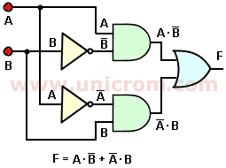
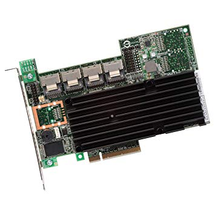
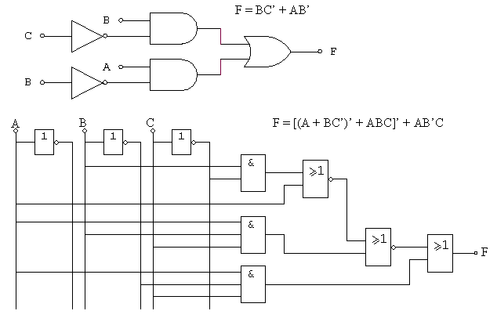

¿Qué es un circuito combinacional?
Un circuito combinacional, como su nombre lo sugiere es un circuito cuya salida depende solamente de la "combinación" de sus entradas en el momento que se está realizando la medida en la salida.

Cirrcuito LSI
Son circuitos de alta escala de integración, y tienen entre
100 y 1.000 puertas lógicas, o de 1.000 a 10.000 transistores.

circuito MSI
los circuitos MSI son los que estan
constituidos por un numero de
compuertas logicas comprendidos
entre 12 y 100.

Los circuitos MSI se clasifican en:
*COMUNICACIÓN: Transmiten y modifican información.
• Codificadores: Con prioridad o sin prioridad.
• Decodificadores: Excitadores y no excitadores.
• Multiplexores y demultiplexores.
*ARITMÉTICOS: Operan con los datos binarios que procesan.
• Comparadores.
• Sumadores y semisumadores.
• Restadores.
Ver el siguiente video como complemento